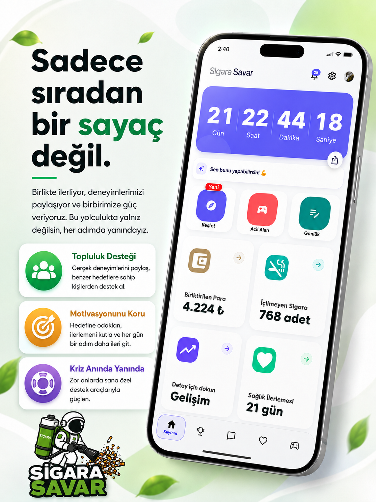
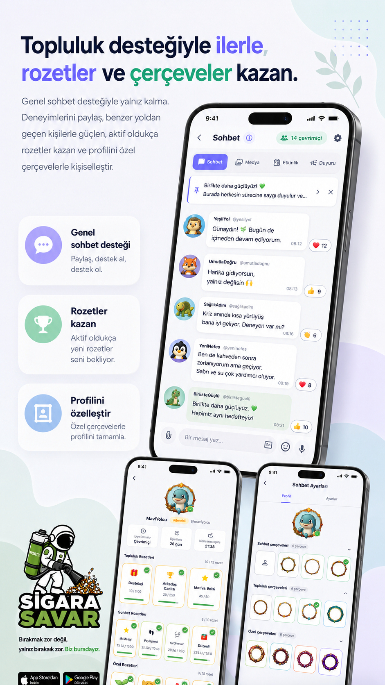
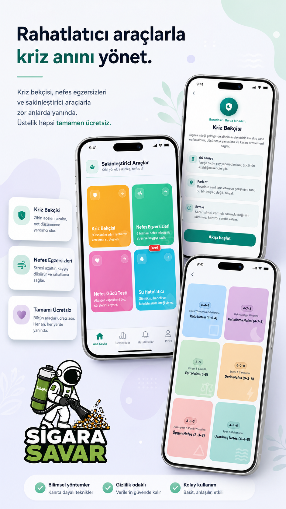
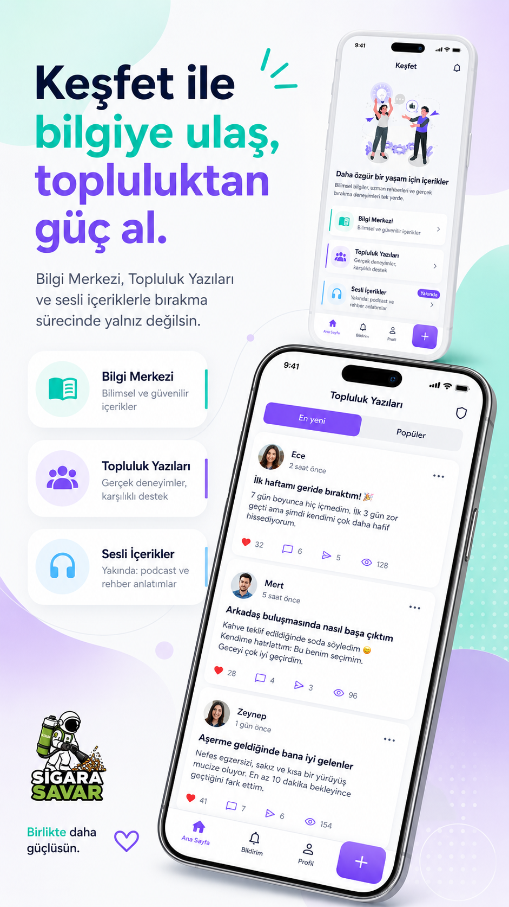
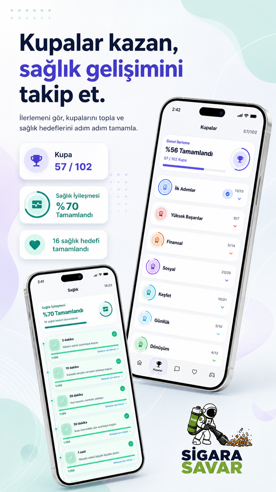
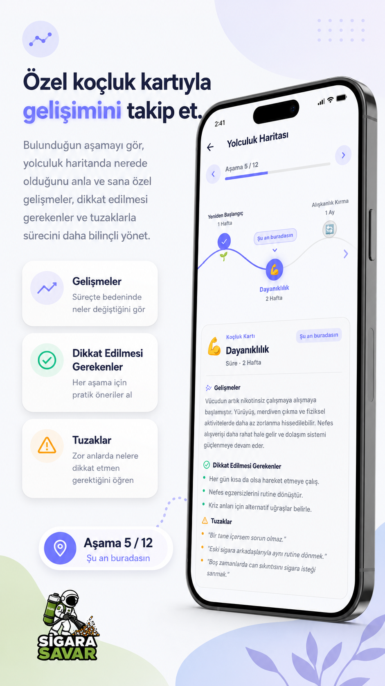

Zihnini yavaşlat, kararını ertele, gücünü hatırla.
Sigarayı bırakma yolculuğunda yanında
Sade bir adım at. Sigaradan özgürleş.
Sigara Savar; ilerlemeni takip etmen, kriz anlarını yönetmen, nefes egzersizleri yapman ve topluluktan destek alman için tasarlandı.

Takip et
İçmediğin günleri, kazancını ve ilerlemeni gör.
Destek al
Benzer hedefteki insanlarla deneyim paylaş.
Kriz yönet
Nefes, bekçi ve sakinleşme araçlarıyla yanında.
Topluluk
Yalnız bırakmak zorunda değilsin.
Genel sohbet, rozetler ve profil çerçeveleriyle süreç daha canlı hale gelir. Deneyimlerini paylaş, destek al, başkalarının küçük zaferlerinden güç bul.
- Genel sohbet desteği
- Rozetler ve özel çerçeveler
- Saygılı ve destek odaklı topluluk

Ücretsiz araçlar
Kriz anında nefes al, sakinleş, devam et.
Kriz bekçisi, nefes egzersizleri, nefes gücü testi ve su hatırlatıcılarıyla zor anlarda basit ve uygulanabilir destek araçları yanında.
Kısa egzersizlerle stres ve kaygıyı azaltmaya odaklan.
Temel destek araçlarını her an yanında taşı.

Keşfet
Bilgiye ulaş, topluluktan güç al.
Bilgi merkezi, topluluk yazıları ve sesli içerik alanlarıyla bırakma sürecini daha bilinçli yönet. Her içerik, küçük bir farkındalık anı için tasarlandı.
Nikotin Krizi Rehberi'ni indir
Gelişim
Sağlığını ve başarılarını görünür kıl.
Kupalar, sağlık gelişimleri ve özel koçluk kartlarıyla hangi aşamada olduğunu gör. Sürecini ölçülebilir, kutlanabilir ve sürdürülebilir hale getir.
- Kupa ve başarı sistemi
- Sağlık gelişimi takibi
- Kişisel yolculuk haritası


Bugün başla
Sigaradan bir savaş değil, sürdürülebilir bir yolculuk çıkar.
Sigara Savar'ı indir, ilk hedefini belirle ve ilk temiz dakikanı takip etmeye başla.